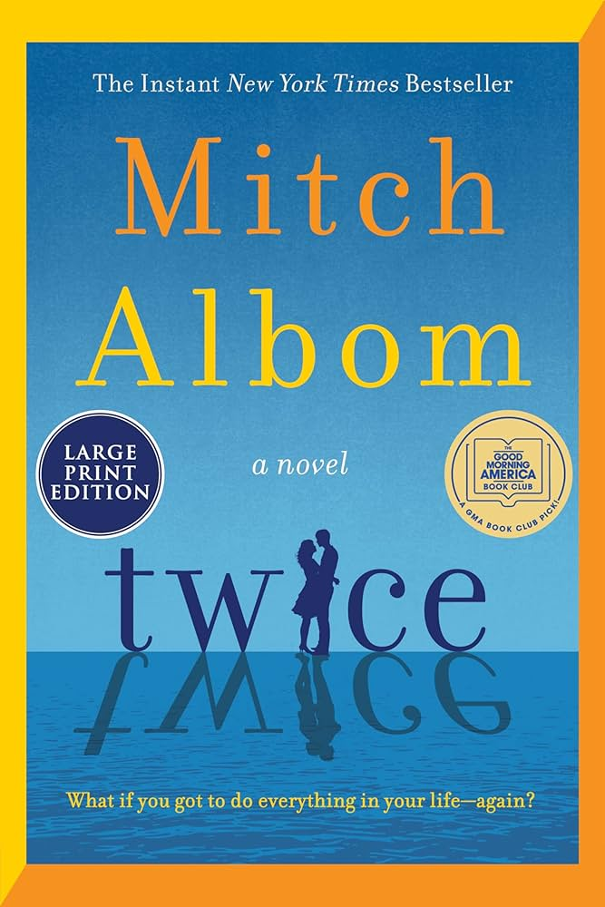
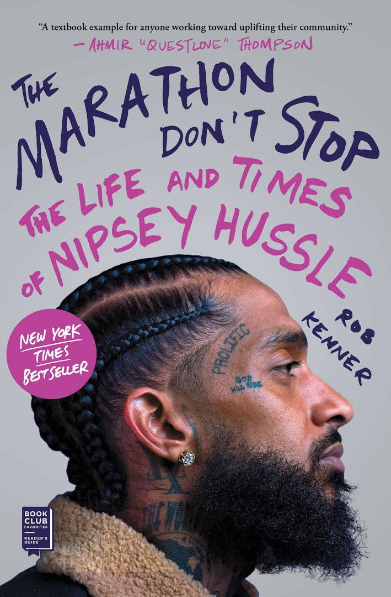
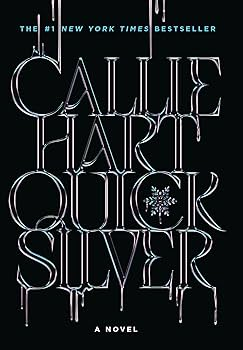

📚 My 40 for 40 Journey
Follow along as I read 40 books to celebrate 40 laps around the sun. Which of these books have you read? Which ones are on your list? Click on any book to check out my thoughts and tap in with some of your own by leaving a comment.
📖 8 / 40 books completed
The Perfect Marriage
The Perfect Divorce

Twice

The Marathon Don't Stop: The Life and Times of Nipsey Hussle

Quicksilver
Brimstone
Christine
The Spook Who Sat by the Door
📚 Book of the Month
The Marathon Don't Stop: The Life and Times of Nipsey Hussle
by Rob Kenner
This month’s selection explores the life of Nipsey Hussle, a rapper, entrepreneur, and community activist whose legacy continues to inspire. Through interviews and storytelling, it highlights how Nipsey used his platform to uplift his community as he strived to create lasting change. His story is a powerful reminder of the impact one person can have when they are committed to their vision and their people. TMC!
Discussion Prompt:
How are you working to build your own legacy? What lessons from Nipsey’s story resonate with you?
Join Discussion💬 Discussion
Can’t make the live discussion? Share your thoughts below and be part of the conversation.